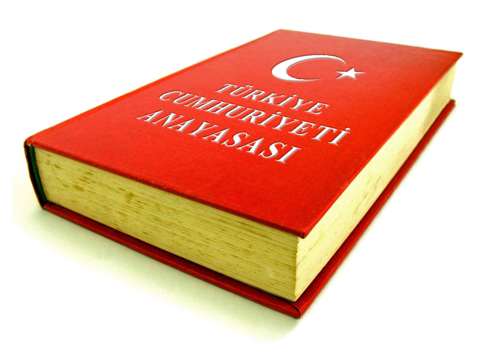
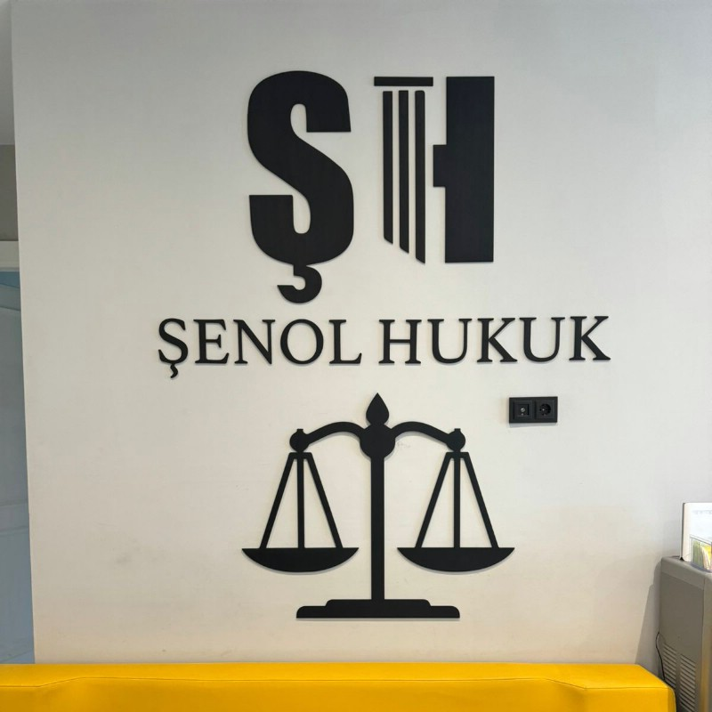
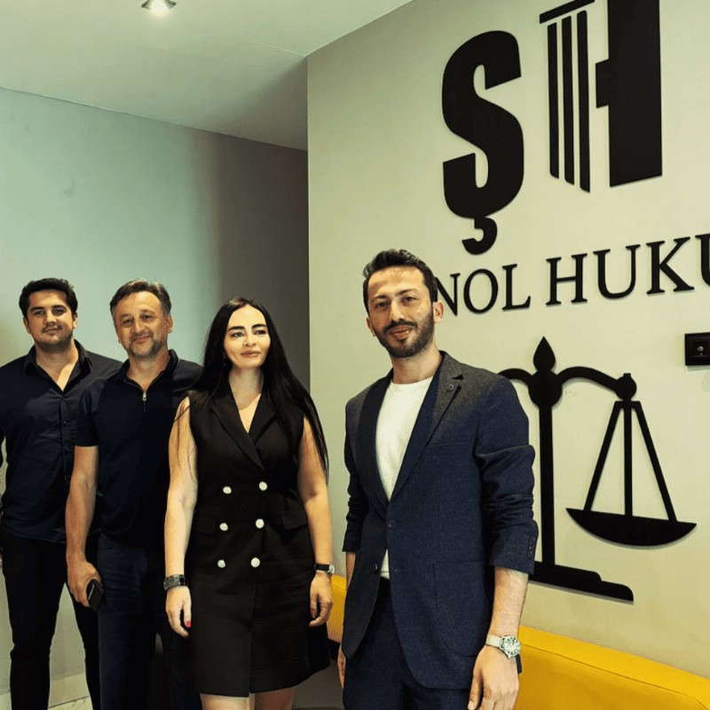
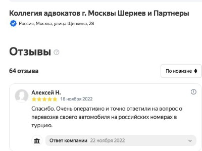
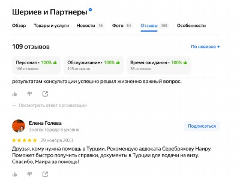
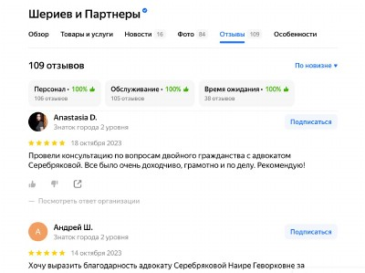
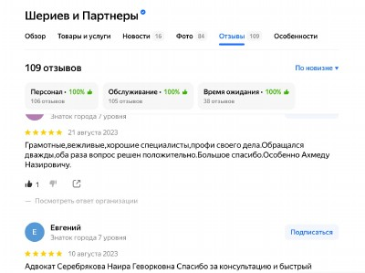
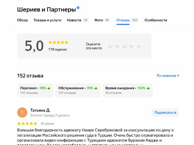

Коллегия адвокатов г. Москвы «Шериев и партнеры» приветствует Вас на сайте и предлагает юридическое сопровождение на территории Турецкой республики по различным правовым вопросам.
Наша Коллегия совместно с партнерами в Турции оказывает правовую помощь и юридическое сопровождение на всех этапах иммиграции/релокации в Турцию и приобретения недвижимости «под ключ», представительство в судах в таких городах как: Анталия, Аланья, Стамбул, Мерсин и др.

Адвокаты в Турции оказывают следующую правовую помощь:
-
Консультируют доверителей по вопросам ВНЖ и гражданства Турецкой республики;
-
Помощь в подборе объектов недвижимости для инвестиций, проверка застройщика на риски;
-
Проверка документов по сделке с недвижимостью и ее сопровождение;
-
Помощь в вопросах открытия и ведения бизнеса в Турции;
-
Помощь в вопросах инвестиций и развития бизнеса;
-
Сопровождение гражданских дел: семейные, наследственные, жилищные и иные;
-
Защита по делам ДТП и уголовным делам;
Услуги адвокатов в Турции
8 (925) 502-40-09
Направить заявку на WhatsApp
Наши гарантии и заверения
-
Ваше сопровождение осуществляют русскоязычные адвокаты из России
-
Знание рынка недвижимости и особенностей законодательства Турции.
-
Вы можете давать поручения без выезда в Турцию, посетив наш офис в Москве.
-
Мы сотрудничаем напрямую с проверенными турецкими адвокатами и специалистами.
-
С нами Вы избегаете любых рисков.
Оказываем правовую помощь в Турции совместно с нашими партнерами




Отзывы наших доверителей











Преимущества обращения в коллегию адвокатов Москвы «Шериев и партнёры» для правового сопровождения граждан РФ в Турции
Удобства визита в московский офис коллегии:
- Возможность личной встречи с высококвалифицированными русскоязычными адвокатами и представителями коллегии непосредственно в Москве
- Консультация квалифицированных юристов без необходимости поездки в Турцию, оформление доверенности на ведение дел удалённо.
- Предоставление подробных консультаций по юридическим вопросам Турции, связанным с покупкой недвижимости, открытием бизнеса, получением вида на жительство или гражданства, таможенным оформлением и защитой прав инвесторов.
- Оперативное взаимодействие и получение первичных юридических заключений прямо в офисе.
- Возможность обсудить ситуацию детально и принять решение о дальнейших действиях сразу после личного визита.
Профессиональные компетенции коллегии:
- Опыт работы с юридическими вопросами Турции, включая приобретение недвижимости, инвестиции и защиту активов, разрешение семейных и наследственных споров, содействие в регистрации компаний и лицензировании видов деятельности.
- Наличие проверенных партнеров среди адвокатов и нотариусов Турции, позволяющее оперативно решать любые возникающие трудности в правовой плоскости на месте.
- Регулярное обновление профессиональных знаний и поддержание высокого уровня юридического обслуживания в соответствии с международными стандартами качества.
Юридические услуги коллегии:
- Представительство интересов россиян в судебных инстанциях Турции по гражданским и административным делам.
- Разработка индивидуальных решений по минимизации налоговых последствий при инвестициях в экономику Турции.
- Поддержка русскоязычного населения Турции в ситуациях нарушения их прав, включая уголовные разбирательства и административные конфликты.
Таким образом, коллегия адвокатов Москвы «Шериев и партнёры» представляет собой надежную структуру, способствующую эффективному разрешению юридических проблем граждан России в Турции. Получение первичной консультации в офисе коллегии позволит быстро разобраться в вашей ситуации и разработать оптимальный план действий. Обращайтесь в нашу компанию, чтобы обеспечить себе надёжную поддержку и безопасность ваших вложений и личных интересов в Турции.
Русскоязычные адвокаты в Турции
8 (925) 502-40-09
Направить заявку на WhatsApp
Примеры успешного правового сопровождения нашими адвокатами в Турции
Проверка недвижимость по запросу клиента
По запросу клиента проанализировали недвижимость перед его приобретением. В результате проверки и анализа была вяявлена сомнительность предложения и завышенная стоимость недвижимости. Клиент отказался от покупки и и сохранил свои средства от потерь
Был составлен письменный отчет по результатам анализа и представлен клиенту.
Сопровождение получение гражданства по инвестиции
В результате консультации с использованием средств видео конференцсвязи наши адвокаты разъяснили доверителю вопросы о том, каким образом происходит процедура подачи заявки на гражданство в Турции, разработали дальнейшую правовую позицию, предложили пути решения сложившейся ситуации.
Фабула: доверитель приобрел недвижимость в Стамбуле для дальнейшего получения гражданства. Процессом получения гражданства обещали заняться застройщики, поручив вопрос своим адвокатам. Доверитель не имел обратной связи от исполнителей поручения, не владел информацией о том, как протекает процесс. Между тем указал, что оригиналы документов по -прежнему у него на руках, исполнитель их не запрашивал. Сложившаяся ситуация насторожила доверителя и он обратился к нам за консультацией и помощью.
Турецкий адвокат проанализировал статус поданной заявки и убедился, что заявка действительно была подана, но вот движения по ней нет. Адвокат проконсультировал доверителя по возможным сценариям развития событий, а также по причинам того, что движения дела нет. Предложил помощь в получении гражданства, с оформлением всех документов надлежащим образом . Российский адвокат со своей стороны взял вопрос на контроль и после оформления необходимых документов подал на регистрацию получения гражданства.

Порядок и стоимость оказываемой адвокатом в Турции юридической помощи.
Вся юридическая помощь оказывается нами на основании соглашений об оказании правовой помощи с доверителями.
Вознаграждения за оказываемые правовые услуги устанавливаются либо в фиксированной форме (в случае консультационных услуг), либо в зависимости от объема задач и оказываемых услуг.
Консультации можно получить в форме видеоконференцсвязи с участием российского, турецкого адвокатов и переводчика.
О стоимости конкретной услуги адвоката Вы можете предварительно узнать по запросу
Руководитель Коллегии адвокатов
г. Москвы «Шериев и партнеры»
Ахмед Шериев
Стоимость услуг адвокатов в Турции:
Другая юридическая помощь в Турции
Исполнение решений суда в Турции.
Сопровождение в приобретении недвижимости Турции.
Покупка квартиры в Турции.
Получение ВНЖ Турции.
Правила ввоза автомобилей в Турцию.
Публикации в СМИ.
Содержание жилого помещения в кондоминиуме Турции
03.06.2024г. Kлерк.ру
Полезная информация по Турецкому праву
Тапу как правоустанавливающий документ.
ТАПУ, также известный как "свидетельство о собственности", является официальным документом, подтверждающим права собственности на недвижимость в Турции. Этот документ выдается местными властями и может быть использован как подтверждение владения или продажи недвижимости.
При покупке недвижимости в Турции, необходимо убедиться, что у продавца есть право собственности на недвижимость и что он имеет ТАПУ, подтверждающий этот факт.
При продаже недвижимости продавец обычно переводит свои права с помощью ТАПУ на покупателя, после чего новый владелец может зарегистрировать свою собственность у местных властей.
Имейте в виду, что при покупке недвижимости в Турции, существуют некоторые юридические и культурные различия, поэтому рекомендуется работать с опытными юристами и недвижимостью агентами, чтобы обеспечить безопасную и успешную сделку.
Ключевые аспекты Кодекса о международном частном праве Турции (Закон № 5718)
1. Общие принципы и сфера действия
- Сфера применения: Кодекс применяется к частноправовым отношениям с иностранным элементом (разное гражданство сторон, сделка за рубежом).
- Роль судьи: Судья обязан применять турецкие коллизионные нормы для определения применимого права. При необходимости он может обратиться к сторонам за помощью в установлении содержания иностранного права.
- Неустановленное иностранное право: Если содержание иностранного права не удалось установить, дело решается на основании турецкого права.
- Публичный порядок: Норма иностранного права не применяется, если она явно противоречит турецкому публичному порядку (*ordre public*). В таком случае применяется турецкое право.
.
2. Определение применимого права (Коллизионные нормы)
Это наиболее важная часть кодекса, определяющая, право какой страны будет регулировать те или иные отношения.
- Правоспособность и дееспособность: Регулируются законом гражданства лица. Для юридических лиц — законом места нахождения их органа управления.
- Брачно-семейные отношения:
- Возможность вступления в брак — закон гражданства каждого из супругов.
- Форма заключения брака — закон места его совершения.
- Последствия брака (имущественные) — общий закон гражданства супругов. Если гражданства разные — закон общего места жительства, а при его отсутствии — турецкое право.
- Расторжение брака — по закону общего гражданства, либо последнего совместного места жительства, либо по турецкому праву.
- Наследование:
- Движимое имущество — закон гражданства наследодателя.
- Недвижимое имущество — всегда подчиняется **турецкому праву**, независимо от гражданства умершего.
- Договорные обязательства:
- Применимое право определяется по выбору сторон.
- Если выбор не сделан — право страны, наиболее тесно связанной с договором (как правило, место жительства должника).
- Контракты о недвижимости регулируются законом страны, где находится эта собственность.
- Внедоговорные обязательства (деликты): Как правило, регулируются законом страны, где был причинен ущерб. Однако, если деликт наиболее тесно связан с другой страной, применяется право этой страны.
3. Международная юрисдикция турецких судов
Кодекс определяет, какие именно турецкие суды будут рассматривать дела с международным элементом.
- Иски против потребителей: Турецкий суд по месту постоянного проживания потребителя обладает юрисдикцией, если другая сторона приняла заказ потребителя в Турции или продавец организовал поездку покупателя.
- Трудовые споры: Рассматриваются судом по месту работы работника в Турции. Также возможна юрисдикция суда по месту жительства работодателя или работника.
- Споры о наследстве: Рассматриваются судом по последнему месту жительства умершего в Турции или, если оно было вне Турции, то судом по месту нахождения наследственного имущества.